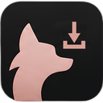

Кнопку lil download можно включить в настройках Сафари, раздел «Расширения».
Кнопка lil download в Сафари включена. Нажми её на любой странице — видео уйдёт во вкладку «Видео», файл — в «Файлы».
Кнопка lil download в Сафари выключена. Включи её в настройках Сафари, раздел «Расширения».